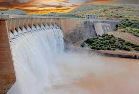
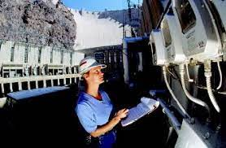
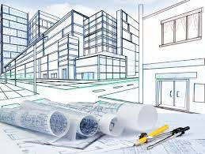

About me
Civil Engineer, master’s in civil engineering with emphasis in water resources, with experience in the development of consulting and research projects related to risk management, management and control of natural resources, hydraulics, watershed hydrology, river infrastructure, as well as modeling of water bodies.


|  |
|
||||||
|  |
| ||||||
|  |
|